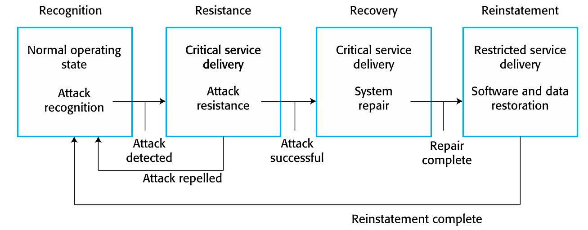
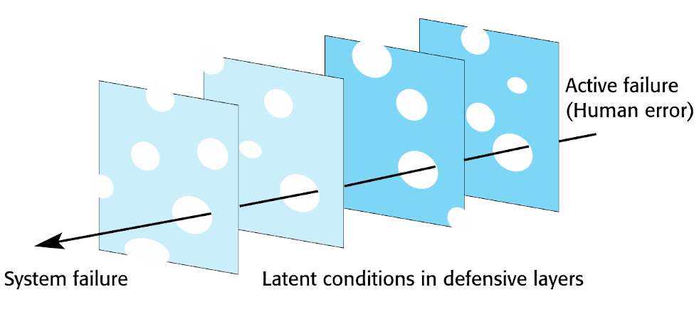
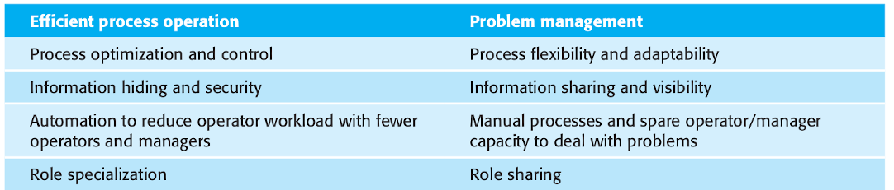
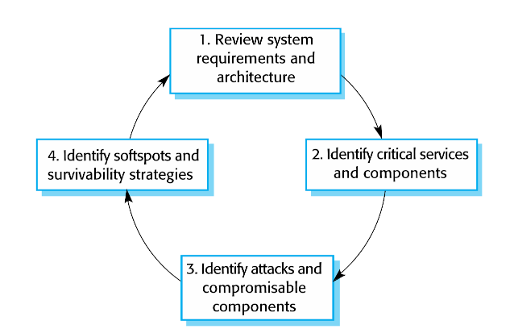

class: center, middle # Kapitel 14: Resilience engineering Paul Schlarmann --- ## Agenda - Einführung - Cybersecurity - Sociotechnical resilience - Resilient systems design --- ## Einleitung - Resilienz beschreibt wie gut ein System kritische Dienste nach Störfall weiter anbieten kann - kritischer Dienst: Dienst, dessen Ausfall zu Schaden führt - Störfall: Ereignis, das das Anbieten kritischer Dienste einschränkt - Ursprünglich aus Safety: Wie können Störfälle vermieden / überstanden werden - Fehlervermeidung nicht Aufgabe, sondern Fehlerbehandlung --- ## Wiederherstellungsmechanismus  - Resilienz nicht einprogrammierbar → System Flexibel / Anpassungsfähig - Kosten-Nutzen-Analyse schwierig: Gesparte Kosten bei Störfällen schwer einschätzbar, Nutzen erst wenn Störfall eintritt --- ## Cybersecurity - Schutz vor Bedrohungen die durch Nutzung von Computern / Internet entstehen - Ausfälle begünstigt durch: - Unkenntnis - Schlechte Security-Verfahren - Sorglosigkeit - Schlechte Abwägung Nutzbarkeit / Security - Alle IT-Ressourcen relevant, kommen meist von extern → Schwachstellen nicht ausschließbar --- ## Planen der Cybersecurity - Cyberangriffe Frage des wann, nicht des ob - Resilience Engineering kann Auswirkungen eines Angriffs minimieren - Begrifflichkeiten: - Ressourcem - Bedrohungen - Angriffe - Bedrohungstypen: - Vertraulichkeit - Integrität - Verfügbarkeit - Grundlage für Cybersecurity: Redundanz / Diversifizierung --- ## Erstellen des Cyber-Resilience-Plans <img style="width:100%;" class="center" src="media/cyberStrats.png"/> - Flexible Reaktionen von Nutzern unterstützen, nicht unterbinden --- ## Sociotechnical resilience - Resilience soziotechnisch: - Flexibilität / Anpassungsfähigkeit nicht in Software - Menschen aber sehr Gut darin → Resilienz nicht rein in Software, sonder Nutzer mit einbeziehen --- ## Bestimmen von Resilienz - Reagieren - Überwachen - Voraussehen - Lernen - Müssen alle vorhanden sein, Fokus kann aber unterschiedlich liegen --- ## Menschliche Fehler - Wie reagiert System auf menschliches Fehlverhalten? - Jeder Mensch macht Fehler → Wichtige Frage - Resiliente Systeme auslegen dass sie damit klarkommen - Strategie wieder Redundanz / Diversifizierung --- ## Schutzschild-Modell <img style="width:100%;" class="center" src="media/shieldModel.png"/> - Modell aber unzureichend: Schichten nie perfekt, immer nicht abgedeckte Fälle - Welche das sind nicht konstant, ändert sich mit Zustand des Systems --- ## Schweizer-Käse-Modell  - Hier direkt Schlimmstfall dargestellt: Löcher mehrerer Schichten übereinander → Systemausfall --- ## Wahrscheinlichkeit von Ausfällen reduzieren - Wahrscheinlichkeit externer, ausfallversursachender Ereignisse reduzieren - Anzahl Schutzschichten erhöhen - Unterschiedliche Schutzmechanismen einsetzen - Löcher in Schutzschichten reduzieren --- ## Operational & management processes - Operative Prozesse: Was muss getan werden um System für Zweck einzusetzen? - Management-Prozesse: Wie kann System erhalten / repariert werden? - Entstehen während Entwicklungsprozess - Sind bereits Schutzmechanismen wenn ensprechend ausgelegt - z.B. Geschultes Personal vorausgesetzt: Teile der Funktionen nach Personal auslagern --- ## Konflikt zwischen Effizienz und Resilienz  --- ## Resilient systems design - Grundlage: - Identifizieren kritischer Dienste und Ressourcen - Auslegen von System sodass Wiederherstellungsmechanismus durchgeführt werden kann - Verschiedene Ansätze --- ## "Surviveable-Systems"-Analyse  - Problem: Annahme das Anforderungen / Architektur des Systems dokumentiert und verfügbar - Bei Firmen oft nicht so, nachrüsten bei alten Systemen oder agile Methoden → Keine feste Doku → Generellere Methode --- ## Generelle Methode des Resilient systems design <img style="width:85%;" class="center" src="media/resilientSystemsDesign.png"/> --- ## Wie Umsetzbar - Für Gewährleistung der Verfügbarkeit kritischer Dienste: - Wichtigste Dienste? - Minimale Anforderungen? - Was schränkt Verfügbarkeit ein? - Wie davor schützen? - Wie wiederherstellen? - Auch IT-Ressourcen betrachten - Reaktionsfähigkeit / Wiederherstellung durch Software automatisierbar - Testen durch simulierte Ausfälle / Cyberangriffe - Überarbeiten Resilienz-Planung --- ## Quellen - Ian Sommerville, Software Engineering, 10. Aufl., Kapitel 14 409-434 - E. Hollnagel, RAG—The Resilience Analysis Grid., 2010 - J. Reason, Human Error: Models and Management., 2000 - R. J. Ellison et al., Survivable Network System Analysis: A Case Study., 1999 - R. J. Ellison et al., Foundations of Survivable Systems Engineering, 2002 --- class: center, middle # Vielen dank führ ihre Aufmerksamkeit